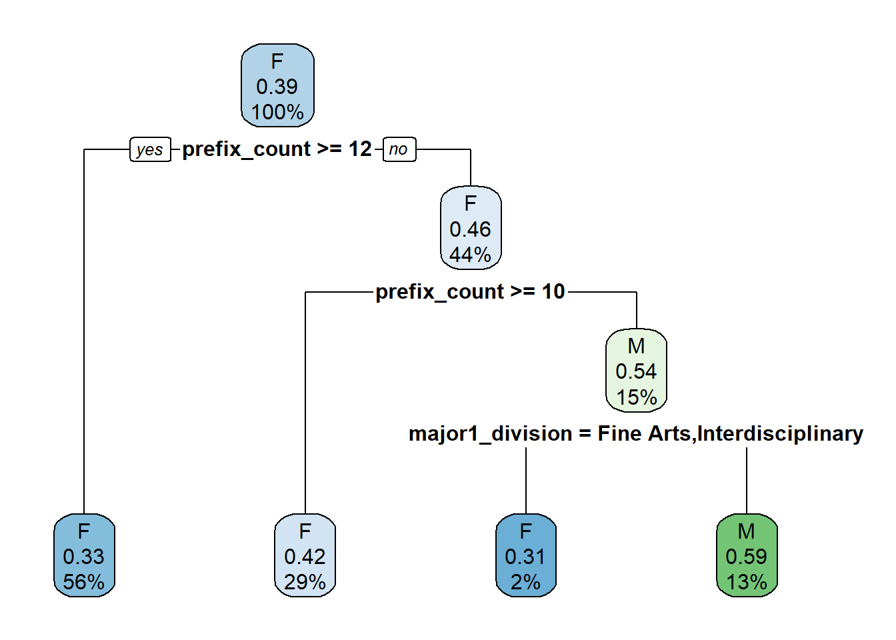

First Generation Macalester College Majors
First Generation Macalester College Majors
What do we mean by “First Generation?” A note about the data
First generation college students are students who are the first in their families to attend college. In terms of this research, first generation students are those who identify as “first gen” on Macalester forms utilized by Macalester’s Institutional Research office. The Institutional Research office provided us with the data set used in this research.
Now that we know where the data is coming from, let’s clarify what it means to be a first gen student as it relates to the data.
What do first gen students look like?
How does the subsection of first gen students compare with the rest of the data?
Surprisingly, most of the data has no information about whether or not a student is a first generational student or not. With what information is available, there are fewer first gen students than students who are not first gen.
The Data
The Mac major data contains around 2500 units of observation, with a little more than 60 descriptive variables each. Every case is about an individual student that graduated from Macalester College between the Fall of 2013 and the Spring of 2018. The variables themselves contain information such as graduation year, sex, major(s), whether or not they are a first generation student, whether or not they studied away, etc.
Our primary focus of this research was with students who identified as “first gen” compared to the entire data.
The Sample
The first thing to notice about the Macalester major data provided is that there is no data concerning first generation status until 2015. In the Spring of 2016, classifications of students as “First Gen” or “Not First Gen” became more common. It is important to acknowledge that the data we used is limited, so the results of the analysis are not predictive. Rather, they are interesting trends that could be analyzed further once more data becomes available.
The Sample: Limited
If we limit the scope of the data to students who are confirmed first gen or not first gen, there are some interesting points to note. First, you’ll notice that the plots are faceted by year, and they include bars split into male-identifying and female-identifying students. It is unclear how non-binary students were classified, but we must work with the limitations of the data provided. In terms of gender distributions, every category has a similar ratio of female students to male students, excluding the data from the class of 2016, which contains 1 student. There are more females than males, as is the case not just with Macalester, but with higher education in general.
First Gen Majors: Major 1
As we start comparing the first major divisions between first generation and non-first generation students, we can see some notable differences in the major divisions chosen by the two groups. First generation students tend to pursue more majors in the Natural Sciences and Mathematics division in comparison with non-first generation students. One thing to note is that we used the listed major 1 as the first major. This may not necessarily be accurate, as a person might not “value” a major more just because they declared it first, but there was no perfect way to adjust for double and triple majors.
First Gen Majors: Major 2
A similar trend of first gen students choosing STEM majors at a higher rate than non-STEM majors exists when examining the distribution of 2nd declared major divisions.
First Gen Majors: Major 3
None of the first gen students triple majored, so no comparisons can be drawn, but that in and of itself is interesting. It is not completely surprising since there were very few triple majors in the dataset initially, but it would be fun to see if this trend holds over time.
First Major: Fine Arts
It is difficult to analyze trends among first gen fine art majors since the sample size is so small, and there were no male-identifying fine arts majors. This is something to note, but it is not unreasonable given the small sample of first gen students along with the small rate of fine arts majors.
First Major: Humanities
First gen humanities majors tended to have less variety in the majors they took compared to non first gen humanities majors for both males and females. Another thing of note is that none of the first gen male students took any language majors except Russian studies, where there was roughly quadruple the rate as opposed to non first gen males. There was also a considerably higher rate of philosophy majors among first gen students. The fact that some majors are not represented among first gen students may be attributable to the small sample size, so more data is needed.
First Major: Interdisciplinary
The distributions of majors within the interdisciplinary division are remarkably similar between first gen and non first gen female students, with the only significant variations being environmental studies and Latin American studies, but even those are reasonably similar. Meanwhile, the rate of male first gen students that took American studies is much higher than the rate among non first gen students, and no male first gen students took media and cultural studies or WGSS, though that could also be an issue of sample size.
First Major: Natural Sciences and Mathematics
In first gen and non first gen students have similar distributions in STEM fields, although there are no first gen male chem or geology majors while there is a marginal amount of those among non first gen males. Similarly, first gen and non first gen females have similar distributions in STEM majors other than the lack of compsci majors among first gen female students.
Second Major: Fine Arts
The first noticeable difference in this graphic is the lack of any male students choosing a Fine Arts second major as all of the individuals in this sample are female. Furthermore, all of the students with a Fine Arts second major always appear to choose an Arts major compared to the other non-first generation students who may choose three different Fine Arts majors.
Second Major: Humanities
First generation students have a much less diverse set of second majors in the Humanities division compared to the other students. Yet again, the sample size of first gen students is far smaller than the non-first gen students, making it difficult to point out trends. Nevertheless, the first gen students chose to take either Asian Language and Cultures, Classics, or Russian Studies. On the other hand, the non-first generation female students took 11 different Humanities majors as their second majors while the males took 7 different majors with Asian Language and Cultures and Philosophy being quite common.
Second Major: Interdisciplinary
In this category, the first generation female and male students take the same Interdisciplinary majors (Educational Studies and Environmental Studies) at about the same ratio between the genders. These two majors seem to be the most common in non-first generation students with the Media and Cultural Studies major also present in both females and males.
Second Major: Natural Sciences and Mathematics
First generation female students appear to choose Neuroscience Studies the most often as their second major in this division. This major is also common in both female and male non-first generation students. On the other hand, the most common majors for first generation male students are Biology and Physics. Interestingly, Computer Science is much more common in non-first generation students.
Studied Away By Sex
In this graphic, we observe that female students both first and non-first generation tend to study abroad more than male students. However, the ratio of non-study abroad students between females and males tends to be about the same.
Classification Tree

We initially attempted to make a classification tree to try and predict the first generation status of students on whom there was no first gen data. We managed to make a tree, but we ran into limitations when trying to use the tree to make predictions due to the insufficient data available. Since there was not enough data to fully train the classification tree, there were some data points that it couldn’t predict, which meant that we weren’t able to utilize the classification tree for its usual purpose. Instead, we used it to identify splits in the data that we wanted to explore further.
Conclusions
- Overall
- No Triple Majors
- No Theater, Dance, or WGS Majors
- Low Selection Diversity Overall in Second Major (except Natural Sciences and Mathematics and Females in Social Sciences)
- Males
- No Majors in Fine Arts, Anthropology, or Psychology
- Prefer Econ
- Females
- No Majors in Physics, Russian Studies, or Religious Studies
- Prefer Biology
Limitations/Assumptions
- Small sample size
- Fewer first gen students overall
- First Gen records begin later
- More females than males
- Forms were filled out correctly